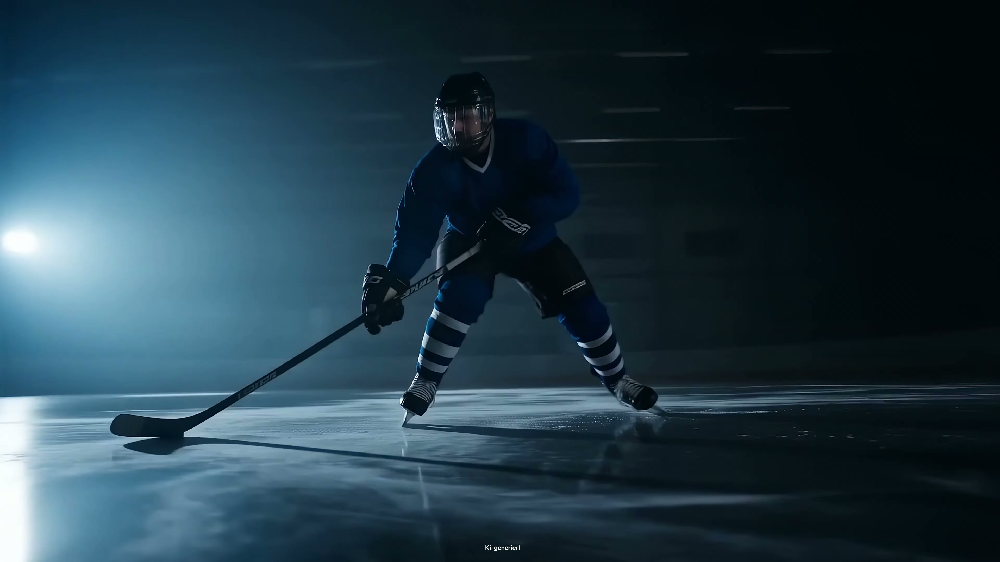
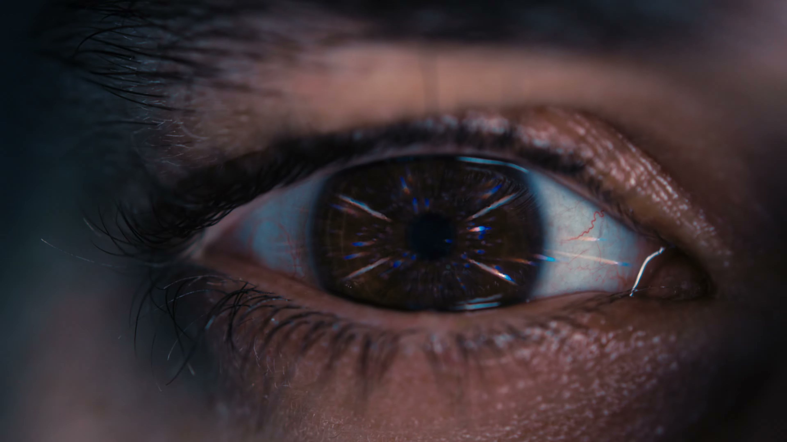
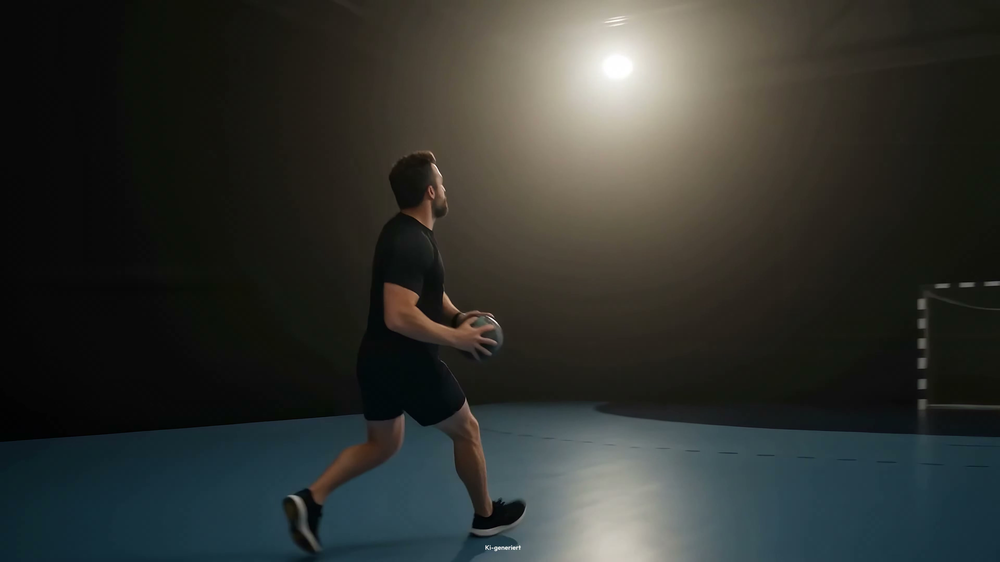
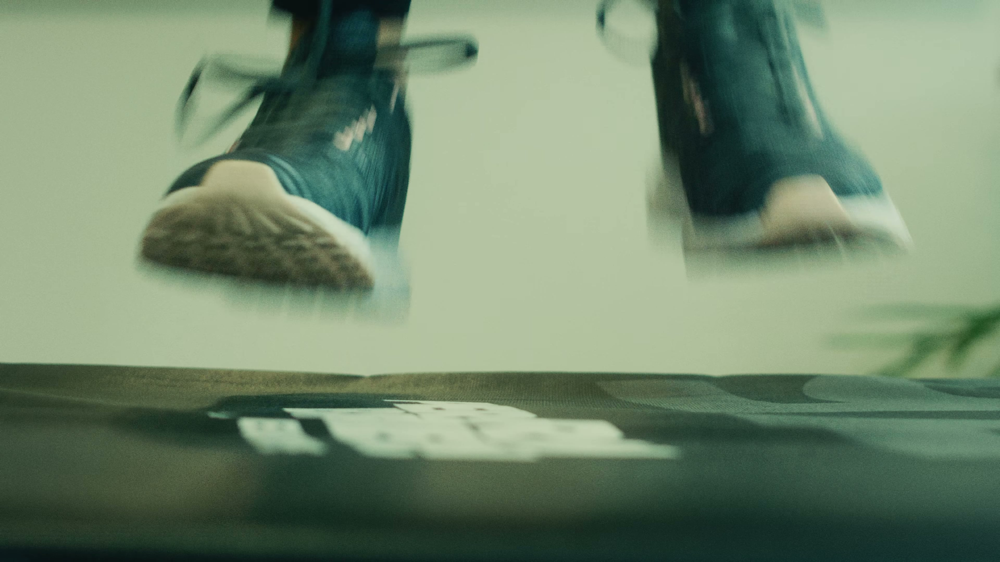
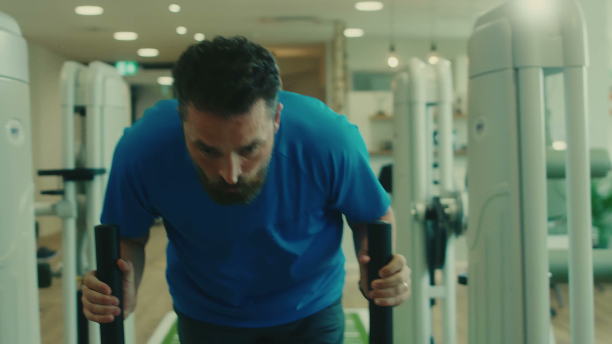

KI-Visual
Imagefilm · Sport · Physiotherapie
MOVIN Powerbreak
Ein 20-sekündiger Imagefilm über Zweifel, therapeutische Begleitung und den Moment, in dem Bewegung wieder möglich wird.
Cineastische Sportbilder und authentische MOVIN-Aufnahmen verdichten eine persönliche Entwicklung zu einer klaren Markenbotschaft.
Ähnliches Projekt anfragenImagefilm · 00:20 min
Freiburg · 2026
Konzeption, Schnitt, Postproduktion, Motion Design, KI-Visuals und Audiokonzept
Direkte Zusammenarbeit mit MOVIN am Lorettoberg
Vom inneren Zweifel zurück in die Bewegung.

KI-Visual
KI-Visual

Case Notes
Warum MOVIN Powerbreak als Referenz relevant ist.
Eine prägnante Markenbotschaft in nur 20 Sekunden erzählen.
Konzeption, Schnitt, Postproduktion, Motion Design, KI-Visuals und Audiokonzept.
Sportliche Leistungsfähigkeit und therapeutische Begleitung in einer verdichteten visuellen Dramaturgie verbinden.
Imagefilm für digitale Markenkommunikation und Präsentationen von MOVIN.
Works
Ausgewählte Arbeiten aus Filmproduktion, Branding, Healthcare und visuellen Kampagnen.
Works öffnenPassende Leistung
Mehr zu Werbefilm & Produktfilm und passenden Produktionsleistungen.
Werbefilm & Produktfilm ansehenAndreas Boehler
Regisseur, Fotograf, DoP, Creative Film-Producer und Art Director aus Freiburg/Basel.
About öffnenBriefing
Nutze das Formular, um Projektart, Ziel, Timing, Budget und Referenz einzuordnen.
Projekt starten